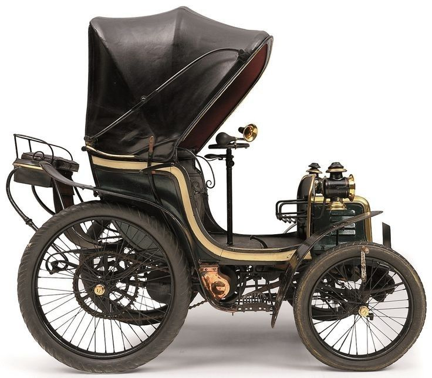
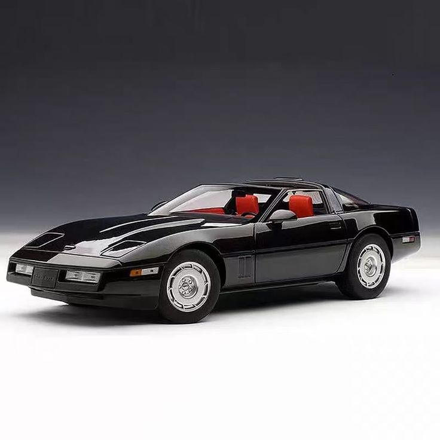

1886
El primer automóvil con motor de combustión interna se atribuye a Karl Friedrich Benz en la ciudad de Mannheim en 1886 con el modelo Benz Patent-Motorwagen.

1996
Era conocido por su evolución, aspecto elegante y moderno. Con las características salidas de aire a los lados en las aletas delanteras de fibra de vidrio de sus antepasados, los parachoques y paneles traseros fueron hechos de plástico moldeado.